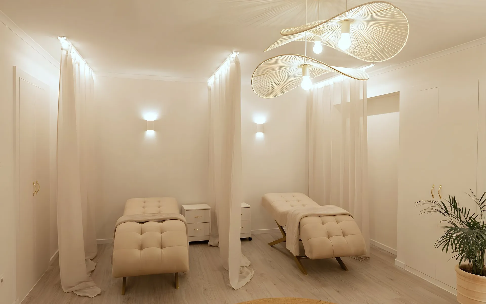

01
La luz
La luz es la primeramateria del espacio.
En el centro Ela de Dénia, cortinas retroiluminadas crean rincones íntimos dentro de una sala abierta: la luz ordena, separa y envuelve sin levantar un solo tabique.
DéniaCentro Ela
Luz indirectaCortinas retroiluminadas